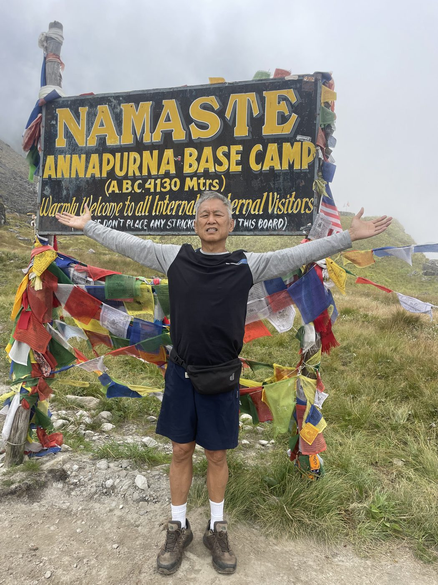
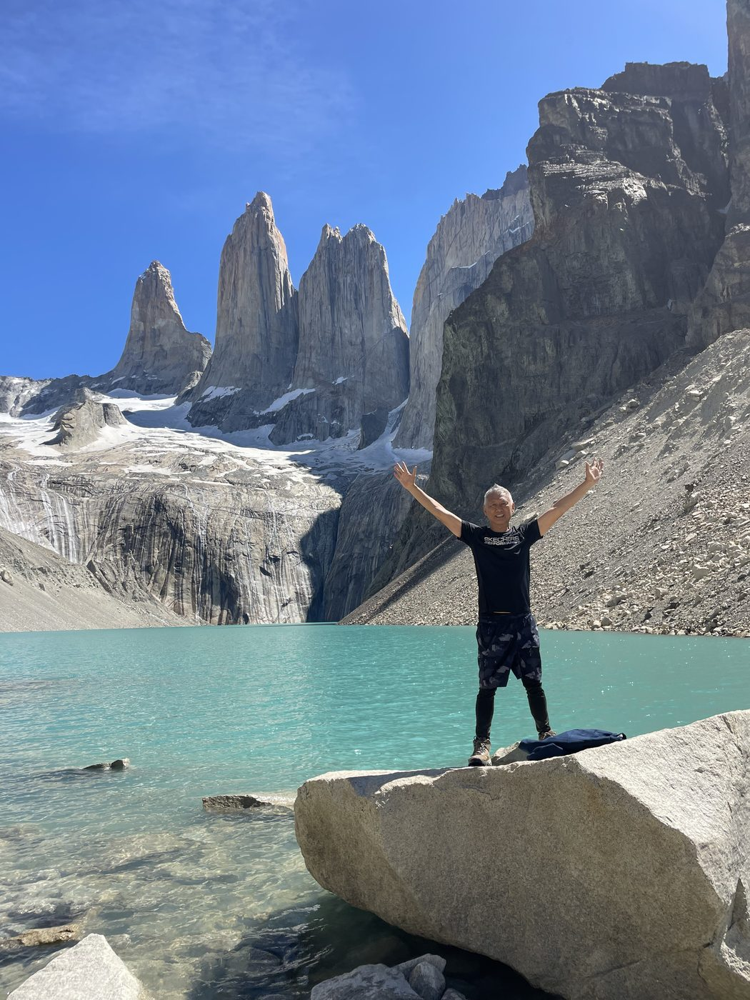
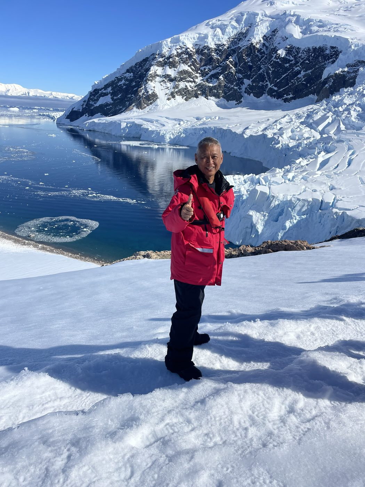
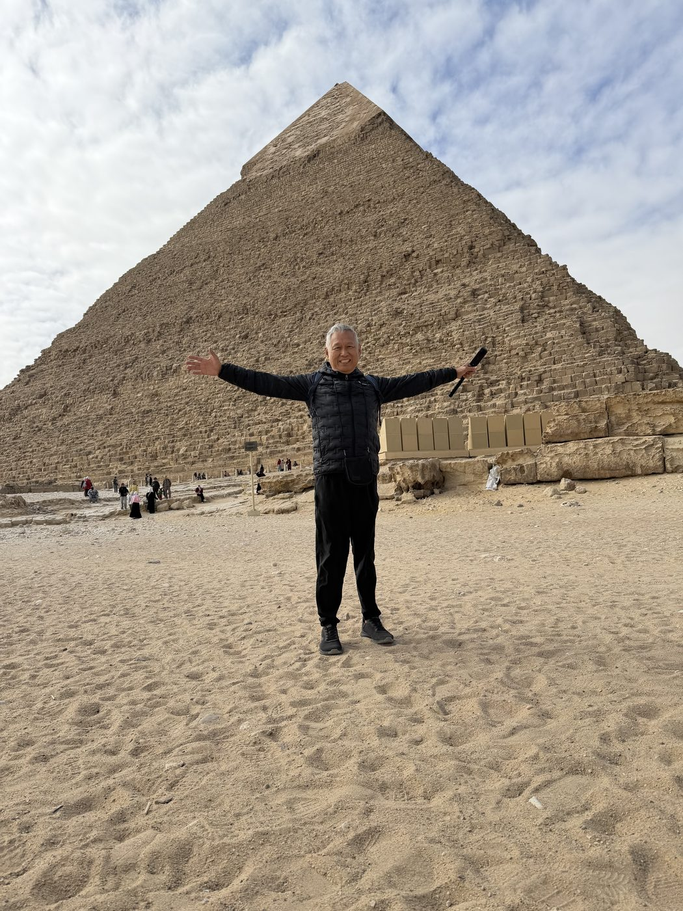
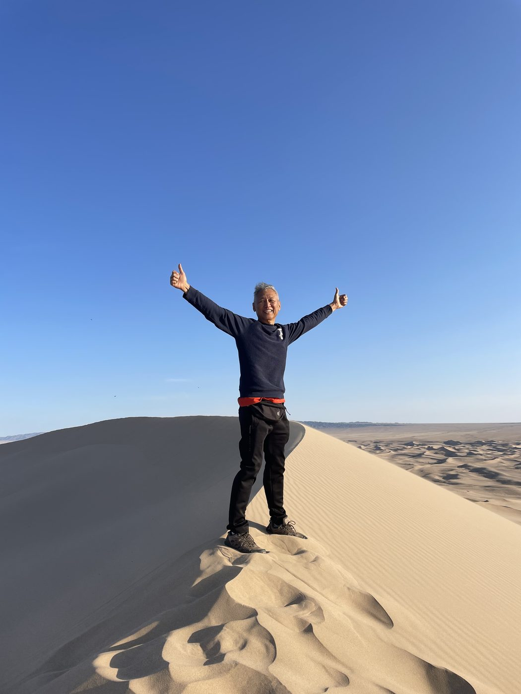
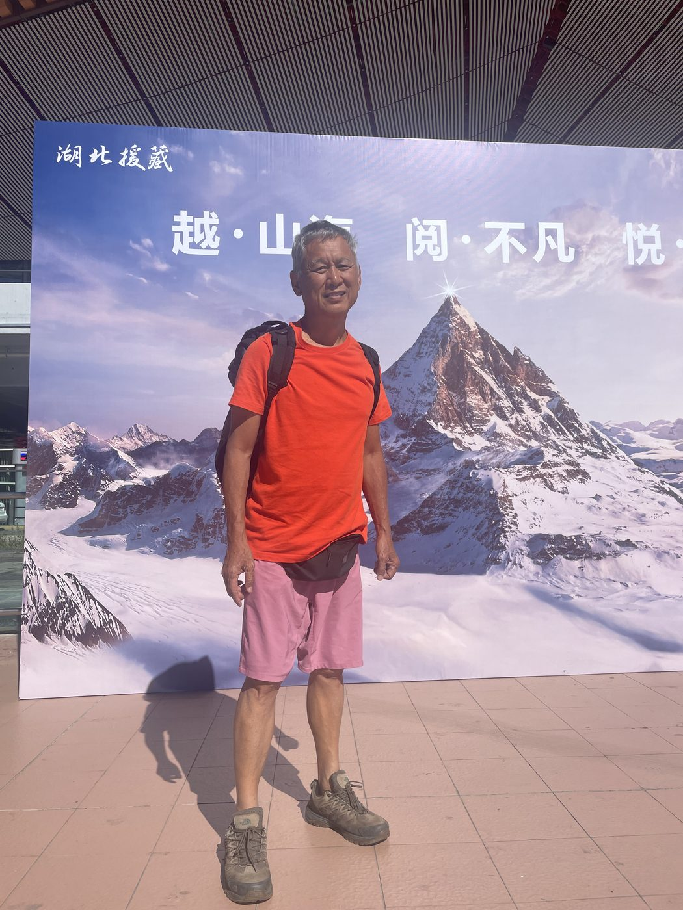
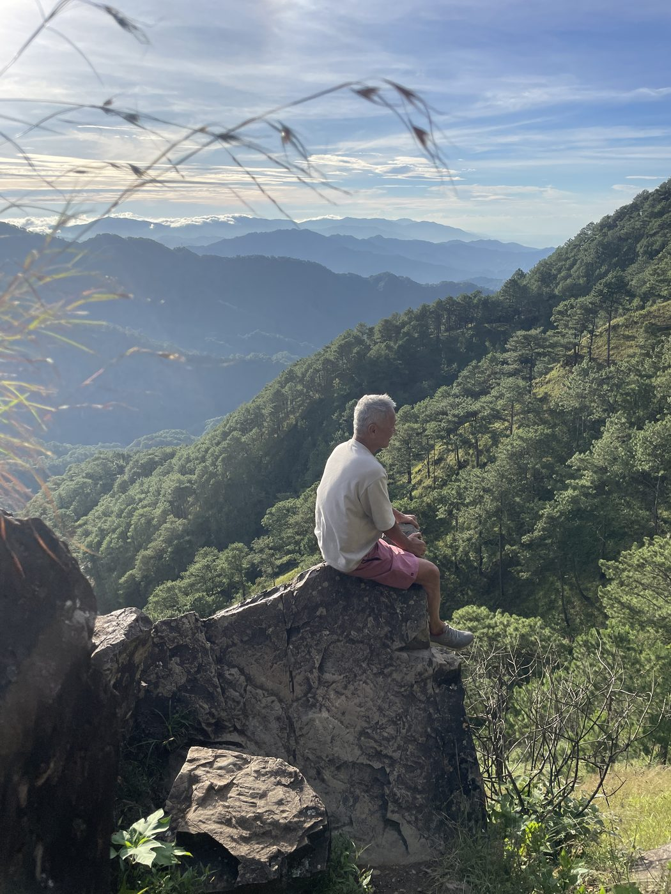
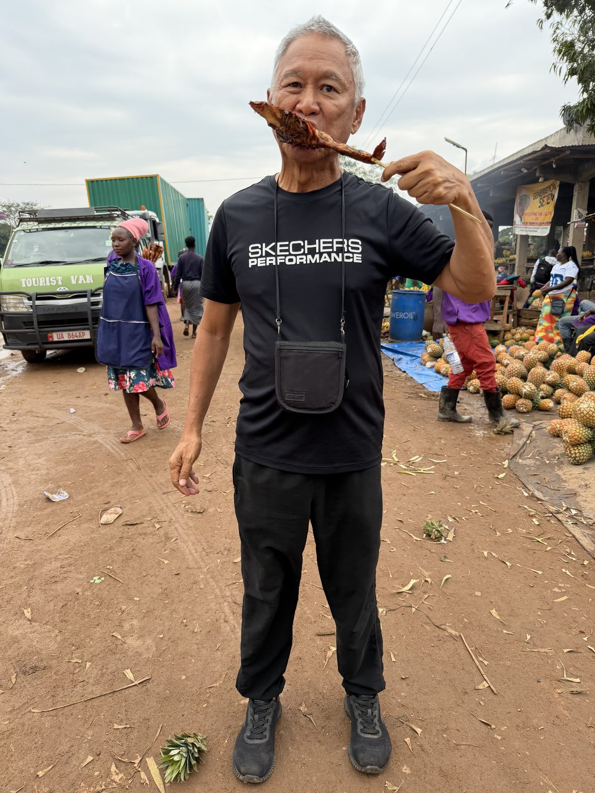
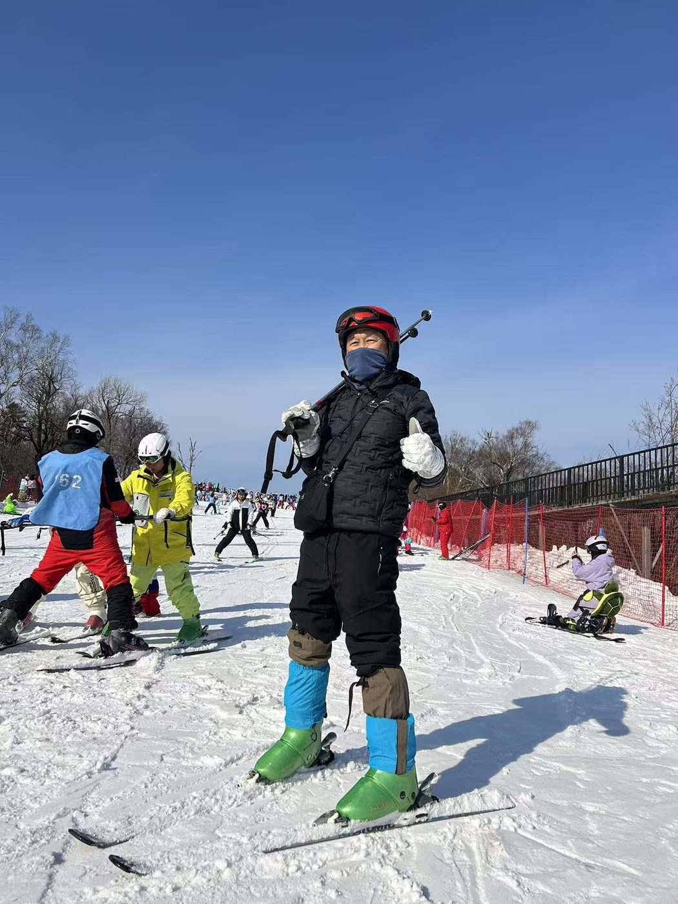

▾ scroll to begin reading ▾
Three years, a single backpack, and more trails than I can count — what the world taught a man travelling alone in his late sixties and seventies.三年、一个背包、数不清的山路——世界教给一位六七十岁独自旅行者的那些道理。
When I retired at sixty-seven, I did not buy a rocking chair. I bought a backpack. Over the last three years or so I have travelled to many corners of the world — mostly on my own — sleeping in hostel bunks, eating whatever the locals eat, and walking until my legs begged me to stop. No tour guide holding a little flag. No luxury suite. Just me, a pack on my back, and a map I usually managed to misread.六十七岁退休时，我没有买摇椅，而是买了一个背包。过去三年左右，我走遍了世界的许多角落——大多是独自一人——睡青年旅舍的床铺，吃当地人吃的食物，一路走到双腿求饶为止。没有举着小旗的导游，没有豪华套房，只有我、背上的行囊，以及一张我总能看错的地图。
People ask me if I get lonely, travelling solo at my age. The honest answer is: rarely. A hostel is the friendliest place on earth. You arrive a stranger and by breakfast you're swapping stories with a twenty-two-year-old from Germany and a retired teacher from Argentina, all of you bent over the same bad map. Solo travel never meant alone. It meant free — free to go where I liked, stay as long as I pleased, and turn down any road that looked interesting.人们问我，这个年纪独自旅行会不会孤独。老实说：很少。青年旅舍是世界上最热情的地方。你来时是个陌生人，早餐时已在和一个来自德国的二十二岁年轻人、一位来自阿根廷的退休教师交换故事，三个人一起盯着同一张破地图。独自旅行从来不意味着孤单，它意味着自由——随心所欲地去任何地方，想待多久就待多久，看见任何有趣的岔路都可以拐进去。
But I won't pretend it's been easy. The hiking, especially, has been hard — genuinely hard. My knees know it. My lungs know it. And that, I've come to believe, is the whole point.但我不会假装这一切都很轻松。徒步尤其艰难——真的很艰难。我的膝盖知道，我的肺也知道。而我逐渐相信，这正是其中的全部意义所在。
"I don't climb because it's easy. I climb because the hard ones are the only ones that change you. Every difficult trail has handed something back to me — a little more strength than I had at the bottom.""我攀登不是因为它容易。我攀登，是因为艰难的路才是唯一能改变你的路。每一条险峻的山道都还给了我一些东西——比站在山脚时多一点的力量。"
If you want to know what tested me most, it was the trek to Annapurna Base Camp in Nepal — 4,130 metres up into the Himalayas. Day after day of climbing, the air thinning until every breath felt rationed, my heart pounding on steps that a younger man would have skipped up without a thought. There were mornings I sat on a cold rock wondering, quietly, what on earth a man my age was doing up here.如果你问什么最考验我，那就是在尼泊尔徒步前往安纳布尔纳大本营——海拔4130米的喜马拉雅山深处。日复一日地攀爬，空气越来越稀薄，每一口呼吸都像是在定量配给，而年轻人轻松跨过的台阶，我的心脏却跳得咚咚作响。有些早晨，我坐在冰冷的石头上，静静地问自己：像我这个年纪的人，究竟在这里做什么。
And then I reached it. The painted sign — Annapurna Base Camp — prayer flags snapping in the wind, the great white peaks ringed all around me like a council of giants. I stood there with tears in my eyes, partly from the cold and mostly from the joy. I had not been carried up. I had walked every single step. At sixty-something, with my own two legs.然后，我到了。那块彩绘的牌子——安纳布尔纳大本营——经幡在风中猎猎作响，壮阔的白色山峰环绕四周，如同一圈巨人的议事厅。我站在那里，眼眶湿润，一半因为寒冷，大半因为喜悦。我不是被人抬上来的，我是一步一步走上来的。六十多岁，靠着自己的双腿。

That climb gave me something no easy holiday ever could. It taught me that the body, even an older body, will rise to whatever you ask of it — if you ask kindly, and keep putting one foot in front of the other.那次攀登给了我任何轻松假期都无法给予的东西。它告诉我，身体——哪怕是一副老了的身体——只要你轻柔地相待，一步接一步地前行，它就能应对你提出的任何要求。
From the roof of Asia I went to the wild bottom of the Americas — Patagonia. The wind down there does not blow; it shoves. The trails are long, the weather changes its mind every twenty minutes, and the famous towers of Torres del Paine hide behind cloud just to test your patience. I hiked for hours, soaked and aching, half-convinced I'd see nothing.从亚洲的屋脊，我来到了美洲的蛮荒南端——巴塔哥尼亚。那里的风不是在吹，而是在推搡你。山路漫长，天气每二十分钟就变一次主意，著名的托雷斯·德尔·潘恩山峰躲在云层后面，仿佛专门考验你的耐心。我走了好几个小时，浑身湿透、酸痛，几乎已经相信自己什么也看不到了。
Then I scrambled up onto a boulder above a glacial lake the colour of melted turquoise, and the clouds parted, and there they were — the jagged peaks, lit silver. I threw both arms up to the sky. No words. Just a seventy-year-old man on a rock at the end of the world, grinning like a boy, the cold lake glittering below.然后，我爬上一块大石头，俯瞰着那片如融化绿松石般颜色的冰川湖，云层分开了，山峰出现了——那些参差的峰顶，被银光勾勒。我把双臂高高举向天空，一句话也说不出来。只是一个七十岁的老人，站在世界尽头的石头上，像个孩子一样咧嘴大笑，脚下是闪烁着寒光的湖面。

Annapurna and Patagonia are the two climbs I think of most. They were the hardest. They are also, not by accident, the ones that left me strongest — in the legs, yes, but mostly somewhere deeper.安纳布尔纳和巴塔哥尼亚，是我回想最多的两次攀登。它们最艰难，也绝非偶然地，是让我变得最强大的两次——强在双腿，更强在内心某个更深的地方。
Not every place asked me to climb. Some simply asked me to stand still and feel small. Antarctica did that. In my red jacket among the glaciers, the water so still it became a mirror, I understood what true silence sounds like — the white silence at the very bottom of the world. Nothing moved. Nothing needed to. I have never felt so far from everything, and so completely at peace.不是每个地方都要求我攀登。有些地方只是让我静静站立，感受自己的渺小。南极洲就是这样。穿着红色夹克，置身冰川之间，水面静谧如镜，我懂得了真正的寂静是什么声音——世界最底端的那种白色寂静。什么都没有移动，也不需要移动。我从未感觉与一切如此遥远，又如此彻底地安宁。

Then the opposite extreme: Egypt, where I stood with my arms outstretched before the Pyramids of Giza, four and a half thousand years of stone in front of me, and the heat coming up off the sand in waves. To touch something so old reminds you how short a single life is — and how worth filling.然后是另一个极端：埃及。我张开双臂，伫立在吉萨金字塔前，四千五百年的石头就在眼前，热浪一阵阵从沙地上涌来。触碰如此古老的事物，会让你想起一段生命是多么短暂——也多么值得好好填满。

And in Mongolia, I climbed a dune. It does not sound like much until you try it — sand swallowing every step, slipping you backward, the sun overhead. I reached the crest, threw up my arms, and laughed at the sheer ridiculous joy of an old man conquering a hill of sand. The desert, it turns out, keeps the same lesson as the mountain: keep going, and you'll get there.在蒙古，我爬上了一座沙丘。听起来不算什么，但亲身一试才知道——沙子吞没每一步，脚下不断往后滑，烈日当头。我终于爬到了顶，高举双臂，为一个老人征服一座沙堆的荒诞喜悦大笑起来。沙漠和山一样，守着同一个道理：继续走，你就能到达。

In Tibet I stood high on the "roof of the world," mountains in every direction, the thin air making even a smile feel like effort. Up there, closer to the sky than most people ever get, I felt the same quiet I'd found in Antarctica — the bigness of the world putting me gently in my place.在西藏，我站在"世界屋脊"的高处，四面八方都是山，稀薄的空气让哪怕一个微笑都像是在用力。在那个比大多数人离天空更近的地方，我感受到了和南极一样的宁静——世界的浩瀚，轻轻地将我放回了我该在的位置。

In the Philippines, after a hard climb through mist, I sat on a rock atop a mountain summit with the clouds rolling past below my boots. Soaked, tired, happy. That's the recipe, it seems — the harder the way up, the sweeter the rock at the top.在菲律宾，经过一段穿越迷雾的艰难攀登后，我坐在山顶的一块石头上，看着云层从靴子下方滚滚而过。浑身湿透、疲惫不堪，却无比快乐。这似乎就是配方——上山越难，山顶的那块石头就越甜。

But the moment that stays warmest in my heart wasn't a summit at all. It was a rural village in Africa, sitting on the red-dirt road, sharing the local food the people offered me with open hands. They had little, and they gave freely. Travel had taken me to the highest, coldest, most remote corners of the planet — and yet it was a simple meal among kind strangers that I keep coming back to. Mountains make you strong. People make you grateful.但在我心里留存最温暖的那一刻，并不是某个山顶。那是在非洲的一个乡村，坐在红土路边，与当地人分享他们用双手递给我的食物。他们拥有的不多，却慷慨地给予。旅途带我去过地球上最高、最寒冷、最偏远的角落——然而我最常回想的，却是与善良的陌生人共享的一顿简单饭食。山让你变得强大，人让你学会感恩。

And just so you don't think it's all reverent silence and mountain tears — near Harbin, in China's frozen northeast, I went skiing. At seventy. Carving down a snowy slope, cold air biting my face, very much hoping my travel insurance was up to date. I am not a graceful skier. But I am a determined one. And there is no rule that says a man must stop learning new ways to fall over just because his hair has gone grey.别以为这一切都是庄严的寂静和山顶的眼泪——在中国东北的冰封之地哈尔滨附近，我去滑雪了。七十岁。在雪坡上划行，冷风刺着脸，心里一直默默盼着旅行保险还没过期。我不是一个优雅的滑雪者，但我是一个坚定的滑雪者。而且没有任何规定说，一个人头发白了，就必须停止学习新的摔跤方式。

Three years, nine places, one backpack — every photo a climb, a kindness, or a moment I'll never give back.三年、九个地方、一个背包——每张照片，都是一次攀登、一份善意，或一个我永不舍得放手的瞬间。
Three years. Nine corners of the world. A great many hostel bunks and more sore mornings than I can count. People my age are supposed to slow down, and perhaps one day I will. But not yet — not while there are still trails that frighten me a little, and summits I'm not sure my legs can reach.三年。世界的九个角落。数不清的青旅床铺，和更数不清的酸痛清晨。像我这个年纪的人，理应放慢脚步——也许有一天我会的。但还没到时候——只要还有让我有点害怕的山路，只要还有我不确定双腿能否抵达的山顶。
Because here is the truth I carried home from all of it: the hard climbs are the ones that made me stronger. Not just in the body — though my body is tougher now than it was at sixty-five — but in the spirit. Every difficult trail taught me that I could do more than I believed. Every solo flight taught me I needn't be afraid. Every stranger in a hostel kitchen taught me the world is far kinder than the news would have you think.因为这就是我从一切经历中带回家的真相：艰难的攀登才是让我变得更强大的那些。不只是身体——尽管我的身体现在比六十五岁时更强健——而是在精神上。每一条险峻的山道都告诉我，我能做到的远比我以为的更多。每一次独自飞行都告诉我不必害怕。青旅厨房里每一个陌生人都告诉我，这个世界远比新闻让你以为的更善良。
"Age is no barrier. It is only a number you carry up the mountain with you. And when you reach the top — out of breath, knees aching, heart full — you set it down for a moment and you are simply a person, alive, alone, and free.""年龄不是障碍。它只是你随身带上山的一个数字。当你到达顶峰——气喘吁吁、膝盖酸疼、心中充盈——你把它放下片刻，你只是一个人，活着、独自、自由。"
So if you're wondering whether it's too late to go — to climb the hard hill, to fly alone, to sleep in the cheap bunk and wake to a new country — let an old man with a worn-out backpack tell you: it isn't. It never was. The mountain is still there. Lace up your boots. I'll see you on the trail. 🎒⛰️所以，如果你在疑惑现在去是否已经太晚——去爬那座艰难的山、独自飞向远方、睡在便宜的床铺、在一个新的国家醒来——就让一个背包已经磨破的老人告诉你：不晚。从来都不晚。山还在那里。系好你的靴带。山路上，我们见。🎒⛰️